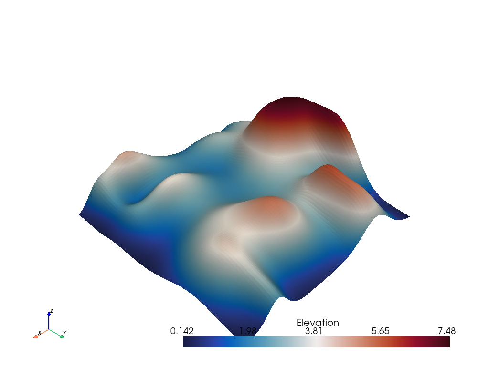

Note
Click here to download the full example code or to run this example in your browser via Binder
Using VTK Algorithms#
In this exercise, you will use a VTK Algorithm directly to filter a PyVista mesh.
VTK algorithms (filters) follow a standard flow for most cases:
Instantiate the algorithm
Set the input data object or connection:
.SetInputDataObject(mesh)Adjust algorithm parameters with the setter methods, e.g.,
SetParameterName(value)Call
.Update()to run the algorithmRetrieve the output of the algorithm:
output = alg.GetOutput()
Let’s see if we can try a few VTK algorithms with that standard workflow.
import pyvista as pv
from pyvista import examples
import vtk
Here is a sample mesh

Simple Filter#
Let’s start out with a simple VTK filter: vtkOutlineFilter
help(vtk.vtkOutlineFilter)
Help on class vtkOutlineFilter in module vtkmodules.vtkFiltersModeling:
class vtkOutlineFilter(vtkmodules.vtkCommonExecutionModel.vtkPolyDataAlgorithm)
| vtkOutlineFilter - create wireframe outline for an arbitrary data set
| or composite dataset
|
| Superclass: vtkPolyDataAlgorithm
|
| vtkOutlineFilter is a filter that generates a wireframe outline of
| any dataset or composite dataset. An outline consists of the twelve
| edges of the dataset bounding box. An option exists for generating
| faces instead of a wireframe outline.
|
| @warning
| When an input composite dataset is provided, options exist for
| producing different styles of outline(s). Also, if the composite
| dataset has non-geometric members (like tables) the result is
| unpredictable.
|
| @warning
| Specialized versions of the outline filter are also available. For
| example see vtkStructuredGridOutlineFilter,
| vtkRectilinearGridOutlineFilter, and vtkImageDataOutlineFilter.
|
| Method resolution order:
| vtkOutlineFilter
| vtkmodules.vtkCommonExecutionModel.vtkPolyDataAlgorithm
| vtkmodules.vtkCommonExecutionModel.vtkAlgorithm
| vtkmodules.vtkCommonCore.vtkObject
| vtkmodules.vtkCommonCore.vtkObjectBase
| builtins.object
|
| Methods defined here:
|
| AddIndex(...)
| AddIndex(self, index:int) -> None
| C++: void AddIndex(unsigned int index)
|
| If the composite style is set to SpecifiedIndex, then one or more
| flat indices can be specified, and bounding boxes will be drawn
| around those pieces of the composite dataset. (Recall that the
| flat index is a non-negative integer, with root index=0,
| increasing in perorder (depth-first) traversal order.
|
| GenerateFacesOff(...)
| GenerateFacesOff(self) -> None
| C++: virtual void GenerateFacesOff()
|
| GenerateFacesOn(...)
| GenerateFacesOn(self) -> None
| C++: virtual void GenerateFacesOn()
|
| GetCompositeStyle(...)
| GetCompositeStyle(self) -> int
| C++: virtual int GetCompositeStyle()
|
| GetGenerateFaces(...)
| GetGenerateFaces(self) -> int
| C++: virtual vtkTypeBool GetGenerateFaces()
|
| GetNumberOfGenerationsFromBase(...)
| GetNumberOfGenerationsFromBase(self, type:str) -> int
| C++: vtkIdType GetNumberOfGenerationsFromBase(const char *type)
| override;
|
| Given the name of a base class of this class type, return the
| distance of inheritance between this class type and the named
| class (how many generations of inheritance are there between this
| class and the named class). If the named class is not in this
| class's inheritance tree, return a negative value. Valid
| responses will always be nonnegative. This method works in
| combination with vtkTypeMacro found in vtkSetGet.h.
|
| GetNumberOfGenerationsFromBaseType(...)
| GetNumberOfGenerationsFromBaseType(type:str) -> int
| C++: static vtkIdType GetNumberOfGenerationsFromBaseType(
| const char *type)
|
| Given a the name of a base class of this class type, return the
| distance of inheritance between this class type and the named
| class (how many generations of inheritance are there between this
| class and the named class). If the named class is not in this
| class's inheritance tree, return a negative value. Valid
| responses will always be nonnegative. This method works in
| combination with vtkTypeMacro found in vtkSetGet.h.
|
| GetOutputPointsPrecision(...)
| GetOutputPointsPrecision(self) -> int
| C++: virtual int GetOutputPointsPrecision()
|
| IsA(...)
| IsA(self, type:str) -> int
| C++: vtkTypeBool IsA(const char *type) override;
|
| Return 1 if this class is the same type of (or a subclass of) the
| named class. Returns 0 otherwise. This method works in
| combination with vtkTypeMacro found in vtkSetGet.h.
|
| IsTypeOf(...)
| IsTypeOf(type:str) -> int
| C++: static vtkTypeBool IsTypeOf(const char *type)
|
| Return 1 if this class type is the same type of (or a subclass
| of) the named class. Returns 0 otherwise. This method works in
| combination with vtkTypeMacro found in vtkSetGet.h.
|
| NewInstance(...)
| NewInstance(self) -> vtkOutlineFilter
| C++: vtkOutlineFilter *NewInstance()
|
| RemoveAllIndices(...)
| RemoveAllIndices(self) -> None
| C++: void RemoveAllIndices()
|
| RemoveIndex(...)
| RemoveIndex(self, index:int) -> None
| C++: void RemoveIndex(unsigned int index)
|
| SafeDownCast(...)
| SafeDownCast(o:vtkObjectBase) -> vtkOutlineFilter
| C++: static vtkOutlineFilter *SafeDownCast(vtkObjectBase *o)
|
| SetCompositeStyle(...)
| SetCompositeStyle(self, _arg:int) -> None
| C++: virtual void SetCompositeStyle(int _arg)
|
| Specify a style for creating bounding boxes around input
| composite datasets. (If the filter input is a vtkDataSet type
| these options have no effect.) There are four choices: 1) place a
| bounding box around the root of the vtkCompositeDataSet (i.e.,
| all of the data); 2) place separate bounding boxes around each
| vtkDataSet leaf of the composite dataset; 3) place a bounding box
| around the root and all dataset leaves; and 4) place a bounding
| box around each (flat) index of the composite dataset. The
| default behavior is both root and leafs.
|
| SetCompositeStyleToLeafs(...)
| SetCompositeStyleToLeafs(self) -> None
| C++: void SetCompositeStyleToLeafs()
|
| SetCompositeStyleToRoot(...)
| SetCompositeStyleToRoot(self) -> None
| C++: void SetCompositeStyleToRoot()
|
| SetCompositeStyleToRootAndLeafs(...)
| SetCompositeStyleToRootAndLeafs(self) -> None
| C++: void SetCompositeStyleToRootAndLeafs()
|
| SetCompositeStyleToSpecifiedIndex(...)
| SetCompositeStyleToSpecifiedIndex(self) -> None
| C++: void SetCompositeStyleToSpecifiedIndex()
|
| SetGenerateFaces(...)
| SetGenerateFaces(self, _arg:int) -> None
| C++: virtual void SetGenerateFaces(vtkTypeBool _arg)
|
| Generate solid faces for the box. This is off by default.
|
| SetOutputPointsPrecision(...)
| SetOutputPointsPrecision(self, _arg:int) -> None
| C++: virtual void SetOutputPointsPrecision(int _arg)
|
| Set/get the desired precision for the output points.
| vtkAlgorithm::SINGLE_PRECISION - Output single-precision floating
| point. vtkAlgorithm::DOUBLE_PRECISION - Output double-precision
| floating point.
|
| __delattr__(self, name, /)
| Implement delattr(self, name).
|
| __getattribute__(self, name, /)
| Return getattr(self, name).
|
| __repr__(self, /)
| Return repr(self).
|
| __setattr__(self, name, value, /)
| Implement setattr(self, name, value).
|
| __str__(self, /)
| Return str(self).
|
| ----------------------------------------------------------------------
| Static methods defined here:
|
| __new__(*args, **kwargs) from builtins.type
| Create and return a new object. See help(type) for accurate signature.
|
| ----------------------------------------------------------------------
| Data descriptors defined here:
|
| __dict__
| Dictionary of attributes set by user.
|
| __this__
| Pointer to the C++ object.
|
| ----------------------------------------------------------------------
| Data and other attributes defined here:
|
| CompositeOutlineStyle = <class 'vtkmodules.vtkFiltersModeling.vtkOutli...
|
| LEAF_DATASETS = 1
|
| ROOT_AND_LEAFS = 2
|
| ROOT_LEVEL = 0
|
| SPECIFIED_INDEX = 3
|
| __vtkname__ = 'vtkOutlineFilter'
|
| ----------------------------------------------------------------------
| Methods inherited from vtkmodules.vtkCommonExecutionModel.vtkPolyDataAlgorithm:
|
| AddInputData(...)
| AddInputData(self, __a:vtkDataObject) -> None
| C++: void AddInputData(vtkDataObject *)
| AddInputData(self, __a:int, __b:vtkDataObject) -> None
| C++: void AddInputData(int, vtkDataObject *)
|
| Assign a data object as input. Note that this method does not
| establish a pipeline connection. Use AddInputConnection() to
| setup a pipeline connection.
|
| GetInput(...)
| GetInput(self) -> vtkDataObject
| C++: vtkDataObject *GetInput()
| GetInput(self, port:int) -> vtkDataObject
| C++: vtkDataObject *GetInput(int port)
|
| GetOutput(...)
| GetOutput(self) -> vtkPolyData
| C++: vtkPolyData *GetOutput()
| GetOutput(self, __a:int) -> vtkPolyData
| C++: vtkPolyData *GetOutput(int)
|
| Get the output data object for a port on this algorithm.
|
| GetPolyDataInput(...)
| GetPolyDataInput(self, port:int) -> vtkPolyData
| C++: vtkPolyData *GetPolyDataInput(int port)
|
| SetInputData(...)
| SetInputData(self, __a:vtkDataObject) -> None
| C++: void SetInputData(vtkDataObject *)
| SetInputData(self, __a:int, __b:vtkDataObject) -> None
| C++: void SetInputData(int, vtkDataObject *)
|
| Assign a data object as input. Note that this method does not
| establish a pipeline connection. Use SetInputConnection() to
| setup a pipeline connection.
|
| SetOutput(...)
| SetOutput(self, d:vtkDataObject) -> None
| C++: virtual void SetOutput(vtkDataObject *d)
|
| ----------------------------------------------------------------------
| Methods inherited from vtkmodules.vtkCommonExecutionModel.vtkAlgorithm:
|
| AbortExecuteOff(...)
| AbortExecuteOff(self) -> None
| C++: virtual void AbortExecuteOff()
|
| AbortExecuteOn(...)
| AbortExecuteOn(self) -> None
| C++: virtual void AbortExecuteOn()
|
| AddInputConnection(...)
| AddInputConnection(self, port:int, input:vtkAlgorithmOutput)
| -> None
| C++: virtual void AddInputConnection(int port,
| vtkAlgorithmOutput *input)
| AddInputConnection(self, input:vtkAlgorithmOutput) -> None
| C++: virtual void AddInputConnection(vtkAlgorithmOutput *input)
|
| Add a connection to the given input port index. See
| SetInputConnection() for details on input connections. This
| method is the complement to RemoveInputConnection() in that it
| adds only the connection specified without affecting other
| connections. Typical usage is
|
| * filter2->AddInputConnection(0, filter1->GetOutputPort(0)).
|
| AddInputDataObject(...)
| AddInputDataObject(self, port:int, data:vtkDataObject) -> None
| C++: virtual void AddInputDataObject(int port,
| vtkDataObject *data)
| AddInputDataObject(self, data:vtkDataObject) -> None
| C++: virtual void AddInputDataObject(vtkDataObject *data)
|
| Add the data-object as an input to this given port. This will add
| a new input connection on the specified port without affecting
| any existing connections on the same input port.
|
| CAN_HANDLE_PIECE_REQUEST(...)
| CAN_HANDLE_PIECE_REQUEST() -> vtkInformationIntegerKey
| C++: static vtkInformationIntegerKey *CAN_HANDLE_PIECE_REQUEST()
|
| Key that tells the pipeline that a particular algorithm can or
| cannot handle piece request. If a filter cannot handle piece
| requests and is asked for a piece, the executive will flag an
| error. If a structured data source cannot handle piece requests
| but can produce sub-extents (CAN_PRODUCE_SUB_EXTENT), the
| executive will use an extent translator to split the extent into
| pieces. Otherwise, if a source cannot handle piece requests, the
| executive will ask for the whole data for piece 0 and not execute
| the source for other pieces.\ingroup InformationKeys
|
| CAN_PRODUCE_SUB_EXTENT(...)
| CAN_PRODUCE_SUB_EXTENT() -> vtkInformationIntegerKey
| C++: static vtkInformationIntegerKey *CAN_PRODUCE_SUB_EXTENT()
|
| This key tells the executive that a particular output port is
| capable of producing an arbitrary subextent of the whole extent.
| Many image sources and readers fall into this category but some
| such as the legacy structured data readers cannot support this
| feature.\ingroup InformationKeys
|
| ConvertTotalInputToPortConnection(...)
| ConvertTotalInputToPortConnection(self, ind:int, port:int,
| conn:int) -> None
| C++: void ConvertTotalInputToPortConnection(int ind, int &port,
| int &conn)
|
| Convenience routine to convert from a linear ordering of input
| connections to a port/connection pair.
|
| GetAbortExecute(...)
| GetAbortExecute(self) -> int
| C++: virtual vtkTypeBool GetAbortExecute()
|
| GetErrorCode(...)
| GetErrorCode(self) -> int
| C++: virtual unsigned long GetErrorCode()
|
| The error code contains a possible error that occurred while
| reading or writing the file.
|
| GetExecutive(...)
| GetExecutive(self) -> vtkExecutive
| C++: vtkExecutive *GetExecutive()
|
| Get this algorithm's executive. If it has none, a default
| executive will be created.
|
| GetInformation(...)
| GetInformation(self) -> vtkInformation
| C++: virtual vtkInformation *GetInformation()
|
| Set/Get the information object associated with this algorithm.
|
| GetInputAlgorithm(...)
| GetInputAlgorithm(self, port:int, index:int, algPort:int)
| -> vtkAlgorithm
| C++: vtkAlgorithm *GetInputAlgorithm(int port, int index,
| int &algPort)
| GetInputAlgorithm(self, port:int, index:int) -> vtkAlgorithm
| C++: vtkAlgorithm *GetInputAlgorithm(int port, int index)
| GetInputAlgorithm(self) -> vtkAlgorithm
| C++: vtkAlgorithm *GetInputAlgorithm()
|
| Returns the algorithm and the output port index of that algorithm
| connected to a port-index pair.
|
| GetInputArrayInformation(...)
| GetInputArrayInformation(self, idx:int) -> vtkInformation
| C++: vtkInformation *GetInputArrayInformation(int idx)
|
| Get the info object for the specified input array to this
| algorithm
|
| GetInputConnection(...)
| GetInputConnection(self, port:int, index:int)
| -> vtkAlgorithmOutput
| C++: vtkAlgorithmOutput *GetInputConnection(int port, int index)
|
| Get the algorithm output port connected to an input port.
|
| GetInputDataObject(...)
| GetInputDataObject(self, port:int, connection:int)
| -> vtkDataObject
| C++: vtkDataObject *GetInputDataObject(int port, int connection)
|
| Get the data object that will contain the algorithm input for the
| given port and given connection.
|
| GetInputExecutive(...)
| GetInputExecutive(self, port:int, index:int) -> vtkExecutive
| C++: vtkExecutive *GetInputExecutive(int port, int index)
| GetInputExecutive(self) -> vtkExecutive
| C++: vtkExecutive *GetInputExecutive()
|
| Returns the executive associated with a particular input
| connection.
|
| GetInputInformation(...)
| GetInputInformation(self, port:int, index:int) -> vtkInformation
| C++: vtkInformation *GetInputInformation(int port, int index)
| GetInputInformation(self) -> vtkInformation
| C++: vtkInformation *GetInputInformation()
|
| Return the information object that is associated with a
| particular input connection. This can be used to get meta-data
| coming from the REQUEST_INFORMATION pass and set requests for the
| REQUEST_UPDATE_EXTENT pass. NOTE: Do not use this in any of the
| pipeline passes. Use the information objects passed as arguments
| instead.
|
| GetInputPortInformation(...)
| GetInputPortInformation(self, port:int) -> vtkInformation
| C++: vtkInformation *GetInputPortInformation(int port)
|
| Get the information object associated with an input port. There
| is one input port per kind of input to the algorithm. Each input
| port tells executives what kind of data and downstream requests
| this algorithm can handle for that input.
|
| GetNumberOfInputConnections(...)
| GetNumberOfInputConnections(self, port:int) -> int
| C++: int GetNumberOfInputConnections(int port)
|
| Get the number of inputs currently connected to a port.
|
| GetNumberOfInputPorts(...)
| GetNumberOfInputPorts(self) -> int
| C++: int GetNumberOfInputPorts()
|
| Get the number of input ports used by the algorithm.
|
| GetNumberOfOutputPorts(...)
| GetNumberOfOutputPorts(self) -> int
| C++: int GetNumberOfOutputPorts()
|
| Get the number of output ports provided by the algorithm.
|
| GetOutputDataObject(...)
| GetOutputDataObject(self, port:int) -> vtkDataObject
| C++: vtkDataObject *GetOutputDataObject(int port)
|
| Get the data object that will contain the algorithm output for
| the given port.
|
| GetOutputInformation(...)
| GetOutputInformation(self, port:int) -> vtkInformation
| C++: vtkInformation *GetOutputInformation(int port)
|
| Return the information object that is associated with a
| particular output port. This can be used to set meta-data coming
| during the REQUEST_INFORMATION. NOTE: Do not use this in any of
| the pipeline passes. Use the information objects passed as
| arguments instead.
|
| GetOutputPort(...)
| GetOutputPort(self, index:int) -> vtkAlgorithmOutput
| C++: vtkAlgorithmOutput *GetOutputPort(int index)
| GetOutputPort(self) -> vtkAlgorithmOutput
| C++: vtkAlgorithmOutput *GetOutputPort()
|
| Get a proxy object corresponding to the given output port of this
| algorithm. The proxy object can be passed to another algorithm's
| SetInputConnection(), AddInputConnection(), and
| RemoveInputConnection() methods to modify pipeline connectivity.
|
| GetOutputPortInformation(...)
| GetOutputPortInformation(self, port:int) -> vtkInformation
| C++: vtkInformation *GetOutputPortInformation(int port)
|
| Get the information object associated with an output port. There
| is one output port per output from the algorithm. Each output
| port tells executives what kind of upstream requests this
| algorithm can handle for that output.
|
| GetProgress(...)
| GetProgress(self) -> float
| C++: virtual double GetProgress()
|
| Get the execution progress of a process object.
|
| GetProgressObserver(...)
| GetProgressObserver(self) -> vtkProgressObserver
| C++: virtual vtkProgressObserver *GetProgressObserver()
|
| GetProgressScale(...)
| GetProgressScale(self) -> float
| C++: virtual double GetProgressScale()
|
| GetProgressShift(...)
| GetProgressShift(self) -> float
| C++: virtual double GetProgressShift()
|
| GetProgressText(...)
| GetProgressText(self) -> str
| C++: virtual char *GetProgressText()
|
| GetReleaseDataFlag(...)
| GetReleaseDataFlag(self) -> int
| C++: virtual int GetReleaseDataFlag()
|
| GetTotalNumberOfInputConnections(...)
| GetTotalNumberOfInputConnections(self) -> int
| C++: int GetTotalNumberOfInputConnections()
|
| Get the total number of inputs for this algorithm
|
| GetUpdateExtent(...)
| GetUpdateExtent(self) -> (int, int, int, int, int, int)
| C++: int *GetUpdateExtent()
| GetUpdateExtent(self, port:int) -> (int, int, int, int, int, int)
| C++: int *GetUpdateExtent(int port)
| GetUpdateExtent(self, x0:int, x1:int, y0:int, y1:int, z0:int,
| z1:int) -> None
| C++: void GetUpdateExtent(int &x0, int &x1, int &y0, int &y1,
| int &z0, int &z1)
| GetUpdateExtent(self, port:int, x0:int, x1:int, y0:int, y1:int,
| z0:int, z1:int) -> None
| C++: void GetUpdateExtent(int port, int &x0, int &x1, int &y0,
| int &y1, int &z0, int &z1)
| GetUpdateExtent(self, extent:[int, int, int, int, int, int])
| -> None
| C++: void GetUpdateExtent(int extent[6])
| GetUpdateExtent(self, port:int, extent:[int, int, int, int, int,
| int]) -> None
| C++: void GetUpdateExtent(int port, int extent[6])
|
| These functions return the update extent for output ports that
| use 3D extents. Where port is not specified, it is assumed to be
| 0.
|
| GetUpdateGhostLevel(...)
| GetUpdateGhostLevel(self) -> int
| C++: int GetUpdateGhostLevel()
| GetUpdateGhostLevel(self, port:int) -> int
| C++: int GetUpdateGhostLevel(int port)
|
| GetUpdateNumberOfPieces(...)
| GetUpdateNumberOfPieces(self) -> int
| C++: int GetUpdateNumberOfPieces()
| GetUpdateNumberOfPieces(self, port:int) -> int
| C++: int GetUpdateNumberOfPieces(int port)
|
| GetUpdatePiece(...)
| GetUpdatePiece(self) -> int
| C++: int GetUpdatePiece()
| GetUpdatePiece(self, port:int) -> int
| C++: int GetUpdatePiece(int port)
|
| These functions return the update extent for output ports that
| use piece extents. Where port is not specified, it is assumed to
| be 0.
|
| HasExecutive(...)
| HasExecutive(self) -> int
| C++: int HasExecutive()
|
| Check whether this algorithm has an assigned executive. This
| will NOT create a default executive.
|
| INPUT_ARRAYS_TO_PROCESS(...)
| INPUT_ARRAYS_TO_PROCESS() -> vtkInformationInformationVectorKey
| C++: static vtkInformationInformationVectorKey *INPUT_ARRAYS_TO_PROCESS(
| )
|
| \ingroup InformationKeys
|
| INPUT_CONNECTION(...)
| INPUT_CONNECTION() -> vtkInformationIntegerKey
| C++: static vtkInformationIntegerKey *INPUT_CONNECTION()
|
| \ingroup InformationKeys
|
| INPUT_IS_OPTIONAL(...)
| INPUT_IS_OPTIONAL() -> vtkInformationIntegerKey
| C++: static vtkInformationIntegerKey *INPUT_IS_OPTIONAL()
|
| Keys used to specify input port requirements.\ingroup
| InformationKeys
|
| INPUT_IS_REPEATABLE(...)
| INPUT_IS_REPEATABLE() -> vtkInformationIntegerKey
| C++: static vtkInformationIntegerKey *INPUT_IS_REPEATABLE()
|
| \ingroup InformationKeys
|
| INPUT_PORT(...)
| INPUT_PORT() -> vtkInformationIntegerKey
| C++: static vtkInformationIntegerKey *INPUT_PORT()
|
| \ingroup InformationKeys
|
| INPUT_REQUIRED_DATA_TYPE(...)
| INPUT_REQUIRED_DATA_TYPE() -> vtkInformationStringVectorKey
| C++: static vtkInformationStringVectorKey *INPUT_REQUIRED_DATA_TYPE(
| )
|
| \ingroup InformationKeys
|
| INPUT_REQUIRED_FIELDS(...)
| INPUT_REQUIRED_FIELDS() -> vtkInformationInformationVectorKey
| C++: static vtkInformationInformationVectorKey *INPUT_REQUIRED_FIELDS(
| )
|
| \ingroup InformationKeys
|
| ModifyRequest(...)
| ModifyRequest(self, request:vtkInformation, when:int) -> int
| C++: virtual int ModifyRequest(vtkInformation *request, int when)
|
| This method gives the algorithm a chance to modify the contents
| of a request before or after (specified in the when argument) it
| is forwarded. The default implementation is empty. Returns 1 on
| success, 0 on failure. When can be either
| vtkExecutive::BeforeForward or vtkExecutive::AfterForward.
|
| ProcessRequest(...)
| ProcessRequest(self, request:vtkInformation, inInfo:vtkCollection,
| outInfo:vtkInformationVector) -> int
| C++: vtkTypeBool ProcessRequest(vtkInformation *request,
| vtkCollection *inInfo, vtkInformationVector *outInfo)
|
| Version of ProcessRequest() that is wrapped. This converts the
| collection to an array and calls the other version.
|
| PropagateUpdateExtent(...)
| PropagateUpdateExtent(self) -> None
| C++: virtual void PropagateUpdateExtent()
|
| Propagate meta-data upstream.
|
| ReleaseDataFlagOff(...)
| ReleaseDataFlagOff(self) -> None
| C++: void ReleaseDataFlagOff()
|
| ReleaseDataFlagOn(...)
| ReleaseDataFlagOn(self) -> None
| C++: void ReleaseDataFlagOn()
|
| RemoveAllInputConnections(...)
| RemoveAllInputConnections(self, port:int) -> None
| C++: virtual void RemoveAllInputConnections(int port)
|
| Removes all input connections.
|
| RemoveAllInputs(...)
| RemoveAllInputs(self) -> None
| C++: void RemoveAllInputs()
|
| Remove all the input data.
|
| RemoveInputConnection(...)
| RemoveInputConnection(self, port:int, input:vtkAlgorithmOutput)
| -> None
| C++: virtual void RemoveInputConnection(int port,
| vtkAlgorithmOutput *input)
| RemoveInputConnection(self, port:int, idx:int) -> None
| C++: virtual void RemoveInputConnection(int port, int idx)
|
| Remove a connection from the given input port index. See
| SetInputConnection() for details on input connection. This
| method is the complement to AddInputConnection() in that it
| removes only the connection specified without affecting other
| connections. Typical usage is
|
| * filter2->RemoveInputConnection(0, filter1->GetOutputPort(0)).
|
| SetAbortExecute(...)
| SetAbortExecute(self, _arg:int) -> None
| C++: virtual void SetAbortExecute(vtkTypeBool _arg)
|
| Set/Get the AbortExecute flag for the process object. Process
| objects may handle premature termination of execution in
| different ways.
|
| SetDefaultExecutivePrototype(...)
| SetDefaultExecutivePrototype(proto:vtkExecutive) -> None
| C++: static void SetDefaultExecutivePrototype(vtkExecutive *proto)
|
| If the DefaultExecutivePrototype is set, a copy of it is created
| in CreateDefaultExecutive() using NewInstance().
|
| SetExecutive(...)
| SetExecutive(self, executive:vtkExecutive) -> None
| C++: virtual void SetExecutive(vtkExecutive *executive)
|
| Set this algorithm's executive. This algorithm is removed from
| any executive to which it has previously been assigned and then
| assigned to the given executive.
|
| SetInformation(...)
| SetInformation(self, __a:vtkInformation) -> None
| C++: virtual void SetInformation(vtkInformation *)
|
| SetInputArrayToProcess(...)
| SetInputArrayToProcess(self, idx:int, port:int, connection:int,
| fieldAssociation:int, name:str) -> None
| C++: virtual void SetInputArrayToProcess(int idx, int port,
| int connection, int fieldAssociation, const char *name)
| SetInputArrayToProcess(self, idx:int, port:int, connection:int,
| fieldAssociation:int, fieldAttributeType:int) -> None
| C++: virtual void SetInputArrayToProcess(int idx, int port,
| int connection, int fieldAssociation, int fieldAttributeType)
| SetInputArrayToProcess(self, idx:int, info:vtkInformation) -> None
| C++: virtual void SetInputArrayToProcess(int idx,
| vtkInformation *info)
| SetInputArrayToProcess(self, idx:int, port:int, connection:int,
| fieldAssociation:str, attributeTypeorName:str) -> None
| C++: virtual void SetInputArrayToProcess(int idx, int port,
| int connection, const char *fieldAssociation,
| const char *attributeTypeorName)
|
| Set the input data arrays that this algorithm will process.
| Specifically the idx array that this algorithm will process
| (starting from 0) is the array on port, connection with the
| specified association and name or attribute type (such as
| SCALARS). The fieldAssociation refers to which field in the data
| object the array is stored. See vtkDataObject::FieldAssociations
| for detail.
|
| SetInputConnection(...)
| SetInputConnection(self, port:int, input:vtkAlgorithmOutput)
| -> None
| C++: virtual void SetInputConnection(int port,
| vtkAlgorithmOutput *input)
| SetInputConnection(self, input:vtkAlgorithmOutput) -> None
| C++: virtual void SetInputConnection(vtkAlgorithmOutput *input)
|
| Set the connection for the given input port index. Each input
| port of a filter has a specific purpose. A port may have zero or
| more connections and the required number is specified by each
| filter. Setting the connection with this method removes all
| other connections from the port. To add more than one connection
| use AddInputConnection().
|
| * The input for the connection is the output port of another
| * filter, which is obtained with GetOutputPort(). Typical usage
| is
|
| * filter2->SetInputConnection(0, filter1->GetOutputPort(0)).
|
| SetInputDataObject(...)
| SetInputDataObject(self, port:int, data:vtkDataObject) -> None
| C++: virtual void SetInputDataObject(int port,
| vtkDataObject *data)
| SetInputDataObject(self, data:vtkDataObject) -> None
| C++: virtual void SetInputDataObject(vtkDataObject *data)
|
| Sets the data-object as an input on the given port index. Setting
| the input with this method removes all other connections from the
| port. Internally, this method creates a vtkTrivialProducer
| instance and sets that as the input-connection for the given
| port. It is safe to call this method repeatedly with the same
| input data object. The MTime of the vtkAlgorithm will not change
| unless the data object changed.
|
| SetProgress(...)
| SetProgress(self, __a:float) -> None
| C++: void SetProgress(double)
|
| `SetProgress` is deprecated. Subclasses should use
| `UpdateProgress` to report progress updates.
|
| SetProgressObserver(...)
| SetProgressObserver(self, __a:vtkProgressObserver) -> None
| C++: void SetProgressObserver(vtkProgressObserver *)
|
| If an ProgressObserver is set, the algorithm will report progress
| through it rather than directly. This means that it will call
| UpdateProgress() on the ProgressObserver rather than itself
| report it and set progress. This is most useful in situations
| where multiple threads are executing an algorithm at the same
| time and want to handle progress locally.
|
| SetProgressShiftScale(...)
| SetProgressShiftScale(self, shift:float, scale:float) -> None
| C++: void SetProgressShiftScale(double shift, double scale)
|
| Specify the shift and scale values to use to apply to the
| progress amount when `UpdateProgress` is called. By default shift
| is set to 0, and scale is set to 1.0. This is useful when the
| vtkAlgorithm instance is used as an internal algorithm to solve
| only a part of a whole problem.
|
| If calling on a internal vtkAlgorithm, make sure you take into
| consideration that values set of the outer vtkAlgorithm as well
| since the outer vtkAlgorithm itself may be nested in another
| algorithm.
|
| ote SetProgressShiftScale does not modify the MTime of the
| algorithm.
|
| SetProgressText(...)
| SetProgressText(self, ptext:str) -> None
| C++: void SetProgressText(const char *ptext)
|
| Set the current text message associated with the progress state.
| This may be used by a calling process/GUI. Note: Because
| SetProgressText() is called from inside RequestData() it does not
| modify the algorithm object. Algorithms are not allowed to modify
| themselves from inside RequestData().
|
| SetReleaseDataFlag(...)
| SetReleaseDataFlag(self, __a:int) -> None
| C++: virtual void SetReleaseDataFlag(int)
|
| Turn release data flag on or off for all output ports.
|
| Update(...)
| Update(self, port:int) -> None
| C++: virtual void Update(int port)
| Update(self) -> None
| C++: virtual void Update()
| Update(self, port:int, requests:vtkInformationVector) -> int
| C++: virtual vtkTypeBool Update(int port,
| vtkInformationVector *requests)
| Update(self, requests:vtkInformation) -> int
| C++: virtual vtkTypeBool Update(vtkInformation *requests)
|
| Bring this algorithm's outputs up-to-date.
|
| UpdateDataObject(...)
| UpdateDataObject(self) -> None
| C++: virtual void UpdateDataObject()
|
| Create output object(s).
|
| UpdateExtent(...)
| UpdateExtent(self, extents:(int, int, int, int, int, int)) -> int
| C++: virtual int UpdateExtent(const int extents[6])
|
| Convenience method to update an algorithm after passing requests
| to its first output port. Supports extent request.
|
| UpdateExtentIsEmpty(...)
| UpdateExtentIsEmpty(self, pinfo:vtkInformation,
| output:vtkDataObject) -> int
| C++: int UpdateExtentIsEmpty(vtkInformation *pinfo,
| vtkDataObject *output)
| UpdateExtentIsEmpty(self, pinfo:vtkInformation, extentType:int)
| -> int
| C++: int UpdateExtentIsEmpty(vtkInformation *pinfo,
| int extentType)
|
| This detects when the UpdateExtent will generate no data This
| condition is satisfied when the UpdateExtent has zero volume
| (0,-1,...) or the UpdateNumberOfPieces is 0. The source uses this
| call to determine whether to call Execute.
|
| UpdateInformation(...)
| UpdateInformation(self) -> None
| C++: virtual void UpdateInformation()
|
| Bring the algorithm's information up-to-date.
|
| UpdatePiece(...)
| UpdatePiece(self, piece:int, numPieces:int, ghostLevels:int,
| extents:(int, int, int, int, int, int)=...) -> int
| C++: virtual int UpdatePiece(int piece, int numPieces,
| int ghostLevels, const int extents[6]=nullptr)
|
| Convenience method to update an algorithm after passing requests
| to its first output port. See documentation for Update(int port,
| vtkInformationVector* requests) for details. Supports piece and
| extent (optional) requests.
|
| UpdateProgress(...)
| UpdateProgress(self, amount:float) -> None
| C++: void UpdateProgress(double amount)
|
| Update the progress of the process object. If a ProgressMethod
| exists, executes it. Then set the Progress ivar to amount. The
| parameter amount should range between (0,1).
|
| UpdateTimeStep(...)
| UpdateTimeStep(self, time:float, piece:int=-1, numPieces:int=1,
| ghostLevels:int=0, extents:(int, int, int, int, int, int)=...)
| -> int
| C++: virtual int UpdateTimeStep(double time, int piece=-1,
| int numPieces=1, int ghostLevels=0,
| const int extents[6]=nullptr)
|
| Convenience method to update an algorithm after passing requests
| to its first output port. See documentation for Update(int port,
| vtkInformationVector* requests) for details. Supports time, piece
| (optional) and extent (optional) requests.
|
| UpdateWholeExtent(...)
| UpdateWholeExtent(self) -> None
| C++: virtual void UpdateWholeExtent()
|
| Bring this algorithm's outputs up-to-date.
|
| ----------------------------------------------------------------------
| Data and other attributes inherited from vtkmodules.vtkCommonExecutionModel.vtkAlgorithm:
|
| DEFAULT_PRECISION = 2
|
| DOUBLE_PRECISION = 1
|
| DesiredOutputPrecision = <class 'vtkmodules.vtkCommonExecutionModel.vt...
|
| SINGLE_PRECISION = 0
|
| ----------------------------------------------------------------------
| Methods inherited from vtkmodules.vtkCommonCore.vtkObject:
|
| AddObserver(...)
| AddObserver(self, event:int, command:Callback, priority:float=0.0) -> int
| C++: unsigned long AddObserver(const char* event,
| vtkCommand* command, float priority=0.0f)
|
| Add an event callback command(o:vtkObject, event:int) for an event type.
| Returns a handle that can be used with RemoveEvent(event:int).
|
| BreakOnError(...)
| BreakOnError() -> None
| C++: static void BreakOnError()
|
| This method is called when vtkErrorMacro executes. It allows the
| debugger to break on error.
|
| DebugOff(...)
| DebugOff(self) -> None
| C++: virtual void DebugOff()
|
| Turn debugging output off.
|
| DebugOn(...)
| DebugOn(self) -> None
| C++: virtual void DebugOn()
|
| Turn debugging output on.
|
| GetCommand(...)
| GetCommand(self, tag:int) -> vtkCommand
| C++: vtkCommand *GetCommand(unsigned long tag)
|
| GetDebug(...)
| GetDebug(self) -> bool
| C++: bool GetDebug()
|
| Get the value of the debug flag.
|
| GetGlobalWarningDisplay(...)
| GetGlobalWarningDisplay() -> int
| C++: static int GetGlobalWarningDisplay()
|
| GetMTime(...)
| GetMTime(self) -> int
| C++: virtual vtkMTimeType GetMTime()
|
| Return this object's modified time.
|
| GlobalWarningDisplayOff(...)
| GlobalWarningDisplayOff() -> None
| C++: static void GlobalWarningDisplayOff()
|
| GlobalWarningDisplayOn(...)
| GlobalWarningDisplayOn() -> None
| C++: static void GlobalWarningDisplayOn()
|
| HasObserver(...)
| HasObserver(self, event:int, __b:vtkCommand) -> int
| C++: vtkTypeBool HasObserver(unsigned long event, vtkCommand *)
| HasObserver(self, event:str, __b:vtkCommand) -> int
| C++: vtkTypeBool HasObserver(const char *event, vtkCommand *)
| HasObserver(self, event:int) -> int
| C++: vtkTypeBool HasObserver(unsigned long event)
| HasObserver(self, event:str) -> int
| C++: vtkTypeBool HasObserver(const char *event)
|
| InvokeEvent(...)
| InvokeEvent(self, event:int, callData:Any) -> int
| C++: int InvokeEvent(unsigned long event, void* callData)
| InvokeEvent(self, event:str, callData:Any) -> int
| C++: int InvokeEvent(const char* event, void* callData)
| InvokeEvent(self, event:int) -> int
| C++: int InvokeEvent(unsigned long event)
| InvokeEvent(self, event:str) -> int
| C++: int InvokeEvent(const char* event)
|
| This method invokes an event and returns whether the event was
| aborted or not. If the event was aborted, the return value is 1,
| otherwise it is 0.
|
| Modified(...)
| Modified(self) -> None
| C++: virtual void Modified()
|
| Update the modification time for this object. Many filters rely
| on the modification time to determine if they need to recompute
| their data. The modification time is a unique monotonically
| increasing unsigned long integer.
|
| RemoveAllObservers(...)
| RemoveAllObservers(self) -> None
| C++: void RemoveAllObservers()
|
| RemoveObserver(...)
| RemoveObserver(self, __a:vtkCommand) -> None
| C++: void RemoveObserver(vtkCommand *)
| RemoveObserver(self, tag:int) -> None
| C++: void RemoveObserver(unsigned long tag)
|
| RemoveObservers(...)
| RemoveObservers(self, event:int, __b:vtkCommand) -> None
| C++: void RemoveObservers(unsigned long event, vtkCommand *)
| RemoveObservers(self, event:str, __b:vtkCommand) -> None
| C++: void RemoveObservers(const char *event, vtkCommand *)
| RemoveObservers(self, event:int) -> None
| C++: void RemoveObservers(unsigned long event)
| RemoveObservers(self, event:str) -> None
| C++: void RemoveObservers(const char *event)
|
| SetDebug(...)
| SetDebug(self, debugFlag:bool) -> None
| C++: void SetDebug(bool debugFlag)
|
| Set the value of the debug flag. A true value turns debugging on.
|
| SetGlobalWarningDisplay(...)
| SetGlobalWarningDisplay(val:int) -> None
| C++: static void SetGlobalWarningDisplay(int val)
|
| This is a global flag that controls whether any debug, warning or
| error messages are displayed.
|
| ----------------------------------------------------------------------
| Methods inherited from vtkmodules.vtkCommonCore.vtkObjectBase:
|
| FastDelete(...)
| FastDelete(self) -> None
| C++: virtual void FastDelete()
|
| Delete a reference to this object. This version will not invoke
| garbage collection and can potentially leak the object if it is
| part of a reference loop. Use this method only when it is known
| that the object has another reference and would not be collected
| if a full garbage collection check were done.
|
| GetAddressAsString(...)
| GetAddressAsString(self, classname:str) -> str
|
| Get address of C++ object in format 'Addr=%p' after casting to
| the specified type. This method is obsolete, you can get the
| same information from o.__this__.
|
| GetClassName(...)
| GetClassName(self) -> str
| C++: const char *GetClassName()
|
| Return the class name as a string.
|
| GetIsInMemkind(...)
| GetIsInMemkind(self) -> bool
| C++: bool GetIsInMemkind()
|
| A local state flag that remembers whether this object lives in
| the normal or extended memory space.
|
| GetReferenceCount(...)
| GetReferenceCount(self) -> int
| C++: int GetReferenceCount()
|
| Return the current reference count of this object.
|
| GetUsingMemkind(...)
| GetUsingMemkind() -> bool
| C++: static bool GetUsingMemkind()
|
| A global state flag that controls whether vtkObjects are
| constructed in the usual way (the default) or within the extended
| memory space.
|
| InitializeObjectBase(...)
| InitializeObjectBase(self) -> None
| C++: void InitializeObjectBase()
|
| Register(...)
| Register(self, o:vtkObjectBase)
| C++: virtual void Register(vtkObjectBase *o)
|
| Increase the reference count by 1.
|
| SetMemkindDirectory(...)
| SetMemkindDirectory(directoryname:str) -> None
| C++: static void SetMemkindDirectory(const char *directoryname)
|
| The name of a directory, ideally mounted -o dax, to memory map an
| extended memory space within. This must be called before any
| objects are constructed in the extended space. It can not be
| changed once setup.
|
| SetReferenceCount(...)
| SetReferenceCount(self, __a:int) -> None
| C++: void SetReferenceCount(int)
|
| Sets the reference count. (This is very dangerous, use with
| care.)
|
| UnRegister(...)
| UnRegister(self, o:vtkObjectBase)
| C++: virtual void UnRegister(vtkObjectBase* o)
|
| Decrease the reference count (release by another object). This
| has the same effect as invoking Delete() (i.e., it reduces the
| reference count by 1).
Try using this VTK filter yourself here:
Remember that you will have to wrap the output of the algorithm with pyvista.wrap()
Note
Note that the about filter can be replaced with a .outline() filter in PyVista
p = pv.Plotter()
p.add_mesh(mesh)
p.add_mesh(outline, color='k')
p.show()
Find your own filter#
Take a look at VTK’s examples and documentation to find a filter you’d like to apply to your mesh. The instructors will be around to help you implement.
See https://kitware.github.io/vtk-examples/site/Python/
Total running time of the script: ( 0 minutes 0.870 seconds)